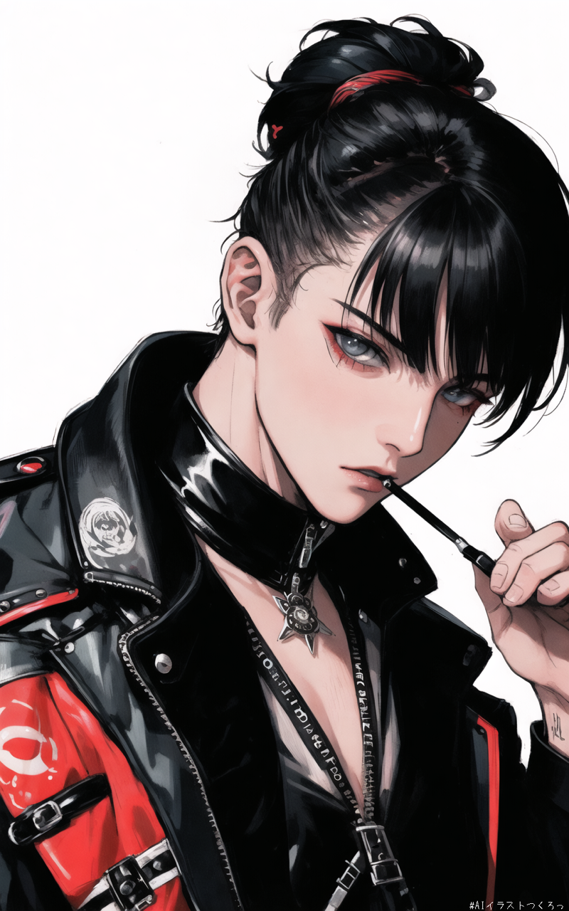

占星術の神秘を背景に、ヒップホップ、チル、lo-fiのモダンなエッセンスを織り交ぜたサウンドクリエーター。星々のリズムや惑星の周期がビートに溶け込み、聴く者を幻想的な音の宇宙へと誘うスタイルが特徴。現代的でありながら、どこかノスタルジックなメロディーと柔らかなビートが、日常の風景をまるで別世界のように彩る。リアルと幻想の狭間で、リスナーが心の奥に潜む無限の可能性を見つける、そんな音楽体験を提供している。
An artist who blends the mysteries of astrology with the modern elements of hip-hop, chill, and lo-fi soundscapes. Known for a unique style where cosmic rhythms and planetary cycles merge into beats, transporting listeners into a surreal world of sound. With melodies that are both contemporary and nostalgically warm, the music transforms everyday scenes into a realm of the extraordinary. Balancing between reality and fantasy, the artist creates an experience where listeners can uncover the infinite potential within themselves.